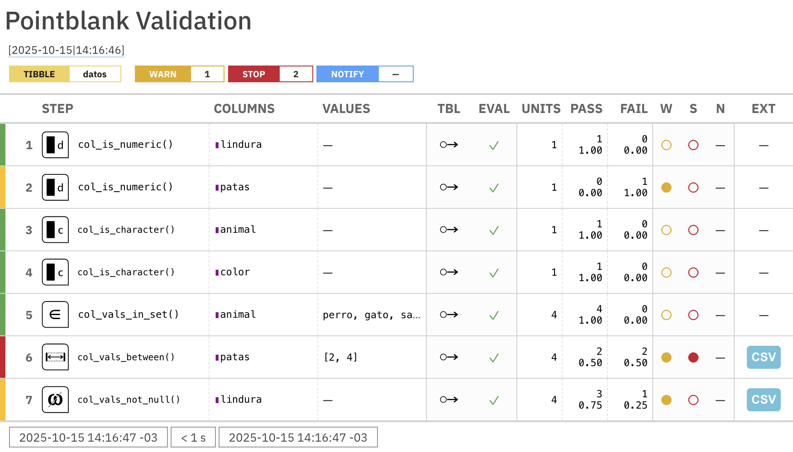
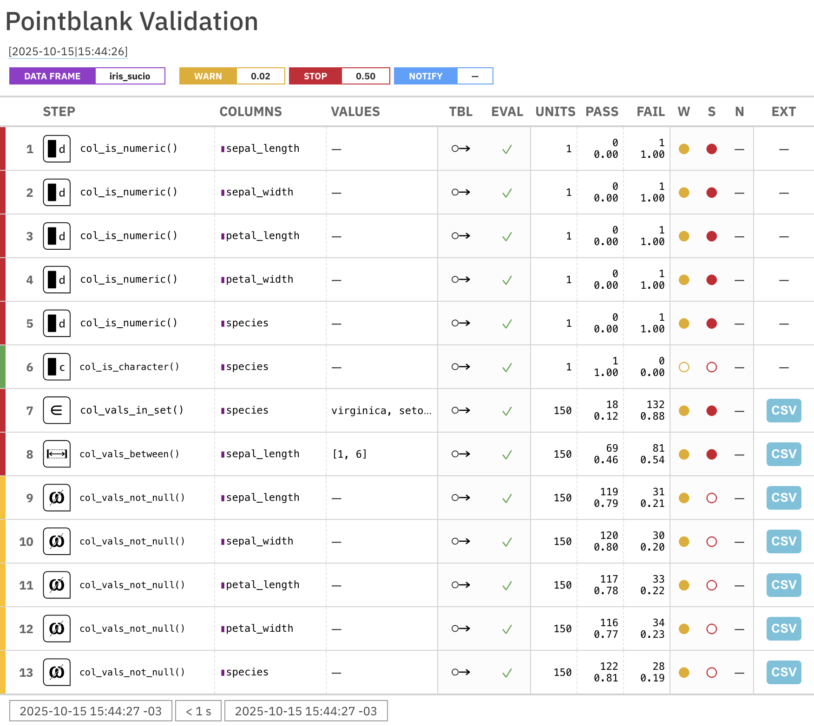

Validación de datos con {testthat} y {pointblank}
18/8/2026

En un post anterior hablé sobre cómo hacer validación básica de datos en R. En resumen, creamos funciones con pruebas simples para validar la calidad de tus datos, tales como revisar cantidad de filas, cantidad de datos perdidos, y otros.
Dado que R es un lenguaje enfocado en el análisis de datos, existen varios paquetes que nos pueden ayudar con la validación de datos!
En este post veremos
{testthat}, un paquete que facilita implementar pruebas unitarias o unit tests a tu código para validar su funcionamiento, y
{pointblank}, un paquete diseñado para la validación de datos con poderosas capacidades de reportabilidad. En unos minutos aprenderás a usar este paquete para garantizar que tus datos cumplen con tus expectativas de calidad.
¿Para qué sirve la validación de datos? Para que, en cualquier punto de tus procesos de análisis de datos, puedas verificar si los datos cumplen con los criterios de calidad que tú definas, y así enterarte de si vienen como esperas o si es que traen sorpresas. En la validación de datos se crean pruebas para, por ejemplo, confirmar que una columna no tenga datos perdidos, que los valores de una columna estén dentro de un rango esperado, etcétera.
Al crear una serie de pruebas, podemos automatizar el proceso de validación de datos. De esta forma, si modificamos nuestro código, o si cambian los datos, no necesitamos revisar manualmente que todo esté en orden, sino que tenemos una especie de protocolo para certificar que los datos son los esperados. Cada vez que hagamos cambios en el código, podemos ejecutar las pruebas para confirmar que todo sigue funcionando como se espera.
Datos de ejemplo
Creemos una pequeña tabla para aprender a validar datos:
library(dplyr)
datos <- tribble(~animal, ~patas, ~lindura, ~color,
"mapache", "4", 100, "gris",
"gato", "80", 90, "negro",
"pollo", "2", NA, "plumas",
"rata", "cuatro", 90, "#CCCCCC")
De inmediato podemos ver en esta tabla creada con tribble() que hay varios problemas: la columna patas viene como caracteres, hay datos perdidos en lindura, y hay un color hexadecimal en color. Pero nos damos cuenta de ésto porque la tabla contiene pocos datos. Cuando trabajemos con miles o millones de observaciones, se vuelve más difícil detectar este tipo de problemas. Ahí es cuando la validación de datos nos puede ayudar!
Validación con {testthat}
A pesar de que {testthat} se usa en general para el desarrollo de paquetes, y se enfoca a validar que cálculos y métodos estadísticos funcionen como es esperado, igual se puede usar para validar en proyectos de análisis de datos.
Asumiendo que nuestro proyecto posee varios scripts donde se procesan los datos, la idea general será crear scripts con pruebas, y periodicamente ejecutar estos scripts de pruebas para confirmar que todo esté en orden.
Crear tests con {testthat}
Iniciamos el uso de {testthat} usando la siguiente función:
usethis::use_testthat()
✔ Creating tests/testthat/.
✔ Writing tests/testthat.R.
☐ Call usethis::use_test() to initialize a basic test file and open it for editing.
Esto crea la carpeta tests/testthat, donde pondremos los tests para nuestros scripts.
Luego, para cada script que queramos, creamos un test. Por ejemplo, si tenemos el script datos.R, ejecutamos:
usethis::use_test("datos")
✔ Writing tests/testthat/test-datos.R.
☐ Modify tests/testthat/test-datos.R.
Como vimos, se crea test-datos.R dentro de la carpeta de tests, y se abre en RStudio.
Dentro de este script empezamos a diseñar las pruebas unitarias, que son pruebas que validan que una unidad específica de código (una función, un cálculo, una transformación de datos) funcione como se espera.
Creando pruebas unitarias
Usamos la función test_that() para definir cada prueba, indicando primero el nombre de la prueba. Dentro, usamos funciones como expect_true(), expect_no_error(), expect_equal(), expect_type(), etc. para declarar que esperamos que, luego de cierta operación, ocurra o no ocurra algo.
Por ejemplo: espero (expect) que mi tabla tenga una columna determinada, o que una columna sea de cierto tipo. Estas son las condiciones que deben cumplirse para que la prueba pase!
Veamos un ejemplo de una prueba:
library(testthat)
test_that("números iguales",
expect_equal(4, 4)
)
Test passed with 1 success 😸.
Esta prueba evalúa si dos números son iguales (expect_equal()), y en este ejemplo se cumple: {testthat} nos entrega un emoji de celebración 🎉
Veamos la siguiente prueba:
test_that("números desiguales",
expect_equal(4, 5)
)
── Failure: números desiguales ─────────────────────────────────────────────────
Expected 4 to equal 5.
Differences:
1/1 mismatches
[1] 4 - 5 == -1
Error:
! Test failed with 1 failure and 0 successes.
Como la prueba no se cumple, porque 4 es distinto a 5, y la prueba nos dará un error explicando en dónde está el problema.
Ejemplos de pruebas unitarias para validación de datos
Apliquemos pruebas a los datos de ejemplo que creamos antes. Es importante que el script sea reproducible, por lo que al principio del script de pruebas se deben cargar los datos necesarios.
Primero, probemos el número de columnas de la tabla:
# código para que el script de pruebas cargue los datos
# library(dplyr)
# datos <- tribble(~animal, ~patas, ~lindura, ~color,
# "mapache", "4", 100, "gris",
# "gato", "80", 90, "negro",
# "pollo", "2", NA, "plumas",
# "rata", "cuatro", 90, "#CCCCCC")
# esperamos que el número de columnas sea 4
test_that("suficientes columnas",
expect_equal(ncol(datos), 4)
)
Test passed with 1 success 🥳.
También podemos probar si hay más de x columnas:
test_that("más de 2 columnas",
expect_gt(ncol(datos), 2)
)
Test passed with 1 success 🎉.
O bien, confirmar que existen columnas específicas en la tabla:
test_that("columnas mínimas presentes",
expect_all_true(c("animal", "patas") %in% names(datos))
)
Test passed with 1 success 😀.
Confirmamos la cantidad de observaciones es suficiente:
test_that("más de 2 filas",
expect_true(nrow(datos) > 2)
)
Test passed with 1 success 🌈.
Podemos aplicar validaciones sobre los valores específicos de las columnas.
Por ejemplo, esperamos que la columna animal sea tipo caracter:
test_that("columnas tipo texto",
expect_type(datos$animal, "character")
)
Test passed with 1 success 🌈.
Confirmar que la columna patas sea tipo numérico:
test_that("columnas tipo numérico",
expect_type(datos$patas, "numeric")
)
── Failure: columnas tipo numérico ─────────────────────────────────────────────
Expected `datos$patas` to have type "numeric".
Actual type: "character"
Error:
! Test failed with 1 failure and 0 successes.
Confirmar que los colores estén dentro de un conjunto determinado:
test_that("colores factibles",
expect_in(datos$color, c("negro", "gris", "blanco", "amarillo", "café"))
)
── Failure: colores factibles ──────────────────────────────────────────────────
Expected `datos$color` to only contain values from `c("negro", "gris", "blanco", "amarillo", "café")`.
Actual: "gris", "negro", "plumas", "#CCCCCC"
Expected: "negro", "gris", "blanco", "amarillo", "café"
Invalid: "plumas", "#CCCCCC"
Error:
! Test failed with 1 failure and 0 successes.
A partir de las pruebas que definimos podemos confirmar que hay problemas en las columnas patas y color, ya que no cumplen con las expectativas que definimos en las pruebas.
Ejecutar las pruebas
Cuando hacemos un script de pruebas con usethis::use_test(), en la parte superior derecha aparece un botón para ejecutar las pruebas (Run Tests). Así se ejecutan todas y se nos informa un resumen:
==> Testing R file using 'testthat'
[ FAIL 2 | WARN 0 | SKIP 0 | PASS 5 ]
── Failure (test-datos.R:26:1): columnas tipo numérico ─────────────────────────
Expected `datos$patas` to have type "numeric".
Actual type: "character"
── Failure (test-datos.R:28:1): colores factibles ──────────────────────────────
Expected `datos$color` to only contain values from `c("negro", "gris", "blanco", "amarillo", "café")`.
Actual: "gris", "negro", "plumas", "#CCCCCC"
Expected: "negro", "gris", "blanco", "amarillo", "café"
Invalid: "plumas", "#CCCCCC"
[ FAIL 2 | WARN 0 | SKIP 0 | PASS 5 ]
Test complete
Aquí se nos informan los errores que tiene nuestro script, y podemos ir a corregirlos.
Si queremos hacerlo más más simple, simplemente usemos las funciones testthat::expect_x() entremedio del código, de modo que si la prueba falla, arroja error, pero si no falla, no pasa nada. Con expect_x() declaramos: esperamos que lo siguiente retorne TRUE:
testthat::expect_equal(n_distinct(datos$animal), 3)
Error:
! Expected `n_distinct(datos$animal)` to equal 3.
Differences:
1/1 mismatches
[1] 4 - 3 == 1
testthat::expect_equal(n_distinct(datos$animal), 4)
En este sentido, funciona igual que stopifnot(), pero para mi resulta mucho más claro (esa función me confunde mucho 😣).
Validación de datos con {pointblank}
A diferencia de {testthat},
el paquete {pointblank} está diseñado para evaluar la calidad de conjuntos de datos. Sirve para definir pruebas que validen que los datos cumplen con ciertos estándares, integrando las pruebas en cadenas de comandos unidos por conectores o pipes (|> o %>%), y se destaca por su capacidad de crear agentes que generan reportes automáticos de validación de datos.
Las funciones de validación de {pointblank} sirven para integrarlas en pipelines. Si se pasa la prueba, el proceso continúa, pero si la prueba falla, el proceso se detiene y te avisa. Probemos la validación de algunos aspectos de la
tabla de ejemplo:
library(pointblank)
datos |>
col_is_numeric(lindura) |>
col_is_character(c(animal, color)) |>
col_vals_in_set(animal, set = c("perro", "gato", "sapo", "pollo", "mapache", "pez", "rata"))
# A tibble: 4 × 4
animal patas lindura color
<chr> <chr> <dbl> <chr>
1 mapache 4 100 gris
2 gato 80 90 negro
3 pollo 2 NA plumas
4 rata cuatro 90 #CCCCCC
Obtenemos de vuelta la tabla de datos, porque implícitamente las tres pruebas se pasaron correctamente. Es decir, si todo está correcto, seguimos con nuestros procesos.
Probemos qué pasa si incluimos pruebas más estrictas que nuestra humilde tabla no podrá pasar:
datos |>
col_is_numeric(lindura) |>
col_is_character(c(animal, color)) |>
col_vals_in_set(animal, set = c("perro", "gato", "sapo", "pollo", "mapache", "pez", "rata")) |>
col_vals_in_set(patas, set = 2:100) |>
col_vals_not_null(lindura)
Error:
! Exceedance of failed test units where values in `patas` should have been in the set of `2`, `3`, `4` (and 96 more).
The `col_vals_in_set()` validation failed beyond the absolute threshold level (1).
* failure level (1) >= failure threshold (1)
Recibimos un aviso que indica un exceso de test fallidos, y una explicación de lo que falló. El paquete ofrece la posibilidad de ajustar o soltar el nivel de dificultad de las pruebas, por ejemplo, para permitir un cierto porcentaje de problemas, pero avisar si este nivel se supera.
Veamos otro ejemplo de pruebas aplicadas a un pipeline: aquí intentamos corregir uno de los problemas con los datos, detectado con una de las pruebas anteriores, y aplicamos nuevamente la prueba para confirmar que quedó bien:
datos |>
# corregir
mutate(lindura = tidyr::replace_na(lindura, mean(lindura, na.rm = TRUE))) |>
# probar
col_vals_not_null(lindura)
# A tibble: 4 × 4
animal patas lindura color
<chr> <chr> <dbl> <chr>
1 mapache 4 100 gris
2 gato 80 90 negro
3 pollo 2 93.3 plumas
4 rata cuatro 90 #CCCCCC
En otras palabras, corregimos los datos e inmediatamente probamos que la corrección funciona, sin necesidad de revisar manualmente.
Alternativamente existen variedades de las funciones de validación que empiezan con test_, y que retornan TRUE o FALSE dependiendo de si se cumple o no la prueba. Sirven para usarlas dentro de condicionales if, o dentro de funciones if() o ifelse(). Por ejemplo, puede usarse en un if para aplicar una corrección si la prueba no se cumple.
Reportes de validación de datos
Aparte de las funciones de validación, el verdadero potencial de {pointblank} está en la creación de agentes que generan reportes automáticos de validación de datos. Por agentes se refieren a un objeto que contiene las pruebas que queremos aplicar a los datos, y que al interrogarlo genera un reporte con los resultados de las pruebas.
Creamos un agente entregándole nuestros datos y opcionalmente el nivel de acción, que le indica cuándo actuar sobre los problemas en nuestros datos. Luego, le indicamos al agente las pruebas que queremos realizar. Finalmente, interrogamos al agente para que nos entregue su reporte.
library(pointblank)
# crear agente
agente <- create_agent(datos,
actions = action_levels(warn_at = 1, stop_at = 2))
# definir pruebas
agente <- agente |>
col_is_numeric(c(lindura, patas)) |>
col_is_character(c(animal, color)) |>
col_vals_in_set(animal, set = c("perro", "gato", "sapo", "pollo", "mapache", "pez", "rata")) |>
col_vals_between(patas, left = 2, right = 4) |>
col_vals_not_null(lindura)
# interrogar
interrogate(agente)
Recibimos un reporte interactivo que indica la calidad de nuestros datos en base a las pruebas definidas:
En el reporte vemos los pasos de validación (las pruebas) hacia abajo en la columna steps, y los colores indican si la prueba se pasó (verde), si hubo advertencias (amarillo), o si la prueba falló (rojo). En la columna units se indica las unidades o pruebas individuales aplicadas en cada paso: probar el formato de una columna es una prueba, pero buscar datos perdidos corresponde a una prueba por cada observación de la tabla.
Ejemplo de validación de datos sucios
Probemos otro ejemplo con
datos ensuciados gracias al paquete {messy}, que te permite agregar datos perdidos, errores gramaticales, símbolos raros y otras asquerosidades a cualquier conjunto de datos. Ensuciaremos el famoso dataset iris:
iris_sucio <- datasets::iris |>
tibble() |>
janitor::clean_names() |>
messy::messy(messiness = 0.2)
iris_sucio
# A tibble: 150 × 5
sepal_length sepal_width petal_length petal_width species
<chr> <chr> <chr> <chr> <chr>
1 "5.1" "3.5" <NA> <NA> <NA>
2 <NA> "3" <NA> <NA> <NA>
3 "4.7" "3.2" "1.3" "0.2" "setosa"
4 <NA> <NA> <NA> "0.2 " <NA>
5 "5" "3.6" "1.4" "0.2 " "s&eto)s)a "
6 "5.4" "3.9" "1.7 " <NA> "s_et!osa "
7 "4.6" "3.4" "1.4 " "0.3" <NA>
8 "5" "3.4" "1.5" "0.2" <NA>
9 "4.4 " "2.9" "1.4" "0.2" "se!to#sa"
10 "4.9 " "3.1 " "1.5" "0.1" "(SET+OS)A"
# ℹ 140 more rows
Luego creamos un agente para validar estos datos:
agente_iris <- create_agent(iris_sucio,
actions = action_levels(warn_at = 0.02, stop_at = 0.5))
agente_iris <- agente_iris |>
col_is_numeric(columns = everything()) |>
col_is_character(species) |>
col_vals_in_set(species, c("virginica", "setosa", "versicolor")) |>
col_vals_between(sepal_length, 1, 6) |>
col_vals_not_null(columns = everything())
interrogate(agente_iris)

Confirmamos que {messy} destruyó a nuestro querido iris 😔🕊️
Crear un plan básico de validación de datos
Si no sabes cómo empezar a validar tus datos, {pointblank} te ayuda a crear un plan básico de validación de datos con la función draft_validation(), la cual genera un script con pruebas básicas para que lo edites y adaptes a tus necesidades:
draft_validation(
tbl = ~datasets::iris,
filename = "test-iris"
)
Este código nos crea un script que contiene 10 pruebas para el dataset en base a sus propios datos y características, y así tenemos material para definir los estándares para el conjunto de datos, y volver a validarlo en el futuro luego de que se apliquen cambios, actualizaciones o correcciones.
Combinación de {pointblank} con {testthat}
Las funciones de validación de {pointblank} pueden usarse en los tests de {testthat}, agregando más formas de confirmar la calidad de tus datos. Para ello, usamos las versiones expect_x() de las funciones de {pointblank}.
Por ejemplo:
test_that("validar cantidad de filas",
expect_row_count_match(datos, 4)
)
Test passed with 1 success 😀.
test_that("validar que no hayan datos perdidos",
expect_col_vals_not_null(datos, animal)
)
Test passed with 1 success 🌈.
test_that("validar que la cantidad de patas sea razonable",
expect_col_vals_between(datos, patas, 2, 4)
)
── Failure: validar que la cantidad de patas sea razonable ─────────────────────
Exceedance of failed test units where values in `patas` should have been between `2` and `4`.
The `expect_col_vals_between()` validation failed beyond the absolute threshold level (1).
* failure level (2) >= failure threshold (1)
Error:
! Test failed with 1 failure and 0 successes.
Conclusiones
Aplicar principios de validación de datos a tus proyectos de análisis de datos te va a ayudar a tener mayor confianza en tus datos, dándote certeza de que no hay sorpresas inesperadas entre las miles o millones de observaciones con las que trabajas. También puede ahorrarte dolores de cabeza, ya que si los datos cambian y estos cambios se desajustan de tus estándares, te enterarás de inmediato en vez de darte cuenta cuando se eche a perder algún gráfico o tabla más adelante 😅
Publicaciones sobre limpieza de datos


Recursos
-
Introducción a
{pointblank} -
Guía oficial de
{pointblank} -
Workshop de
{pointblank}, por Richard Iannone - 11 Test Smells That Make Your Tests Lie to You, por Jakub Sobolewski
-
{validate}, otro paquete para validación de datos en R